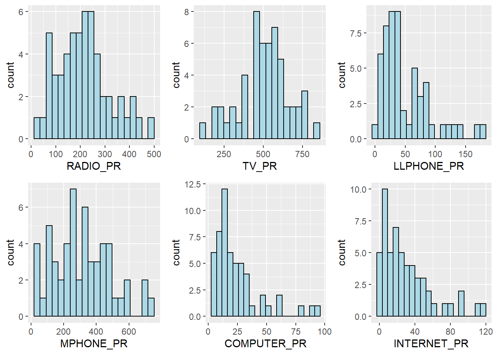

pacman::p_load(sf, spdep, tmap, tidyverse, rgdal, ggpubr, cluster, factoextra, NbClust, heatmaply, corrplot, psych)Hands-on Exercise 3: Geographical Segmentation with Spatially Constrained Clustering Techniques
Overview
In this hands-on exercise, I learned how to delineate homogeneous region by using geographically referenced multivariate data. The two main types of analysis I learned are:
hierarchical cluster analysis
spatially constrained cluster analysis
Getting Started
Firstly, we need to install the required R packages.
sf: importing, managing and processing geospatial data.
spdep: computing spatial weights and spatially lagged variables.
tmap: plotting Thematic Maps.
tidyverse: importing, wrangling and visualizing data. It consists of a family of R packages, including readr, readxl, tidyr, dplyr and ggplot2.
rgdal: handling geospatial data
ggpubr: facilitating ggplot2 to make more visually appealing charts
cluster: performing cluster analysis
factoextra: extracting and visualizing the output of multivariate data analyses
NbClust: determining the best number of clusters in a data set
heatmaply: creating interactive cluster heatmaps
corrplot: plotting correlation matrix
psych: handling multivariate analysis
Importing Required Data
Importing geospatial data
The following codes import Myanmar Township Boundary GIS shapefile into R as a polygon feature data frame.
shan_sf <- st_read(dsn = "data/geospatial",
layer = "myanmar_township_boundaries") %>%
filter(ST %in% c("Shan (East)", "Shan (North)", "Shan (South)"))Reading layer `myanmar_township_boundaries' from data source
`D:\MITB_SunYP\ISSS624\Chap_5\data\geospatial' using driver `ESRI Shapefile'
Simple feature collection with 330 features and 14 fields
Geometry type: MULTIPOLYGON
Dimension: XY
Bounding box: xmin: 92.17275 ymin: 9.671252 xmax: 101.1699 ymax: 28.54554
Geodetic CRS: WGS 84The imported simple feature data frame is a multipolygon object. It contains 330 features and 14 fields. In addition, it’s in WGS84 Coordinate System.
shan_sfSimple feature collection with 55 features and 14 fields
Geometry type: MULTIPOLYGON
Dimension: XY
Bounding box: xmin: 96.15107 ymin: 19.29932 xmax: 101.1699 ymax: 24.15907
Geodetic CRS: WGS 84
First 10 features:
OBJECTID ST ST_PCODE DT DT_PCODE TS TS_PCODE
1 163 Shan (North) MMR015 Mongmit MMR015D008 Mongmit MMR015017
2 203 Shan (South) MMR014 Taunggyi MMR014D001 Pindaya MMR014006
3 240 Shan (South) MMR014 Taunggyi MMR014D001 Ywangan MMR014007
4 106 Shan (South) MMR014 Taunggyi MMR014D001 Pinlaung MMR014009
5 72 Shan (North) MMR015 Mongmit MMR015D008 Mabein MMR015018
6 40 Shan (South) MMR014 Taunggyi MMR014D001 Kalaw MMR014005
7 194 Shan (South) MMR014 Taunggyi MMR014D001 Pekon MMR014010
8 159 Shan (South) MMR014 Taunggyi MMR014D001 Lawksawk MMR014008
9 61 Shan (North) MMR015 Kyaukme MMR015D003 Nawnghkio MMR015013
10 124 Shan (North) MMR015 Kyaukme MMR015D003 Kyaukme MMR015012
ST_2 LABEL2 SELF_ADMIN ST_RG T_NAME_WIN T_NAME_M3
1 Shan State (North) Mongmit\n61072 <NA> State rdk;rdwf မိုးမိတ်
2 Shan State (South) Pindaya\n77769 Danu State yif;w, ပင်းတယ
3 Shan State (South) Ywangan\n76933 Danu State &GmiH ရွာငံ
4 Shan State (South) Pinlaung\n162537 Pa-O State yifavmif; ပင်လောင်း
5 Shan State (North) Mabein\n35718 <NA> State rbdrf; မဘိမ်း
6 Shan State (South) Kalaw\n163138 <NA> State uavm ကလော
7 Shan State (South) Pekon\n94226 <NA> State z,fcHk ဖယ်ခုံ
8 Shan State (South) Lawksawk <NA> State &yfapmuf ရပ်စောက်
9 Shan State (North) Nawnghkio\n128357 <NA> State aemifcsdK နောင်ချို
10 Shan State (North) Kyaukme\n172874 <NA> State ausmufrJ ကျောက်မဲ
AREA geometry
1 2703.611 MULTIPOLYGON (((96.96001 23...
2 629.025 MULTIPOLYGON (((96.7731 21....
3 2984.377 MULTIPOLYGON (((96.78483 21...
4 3396.963 MULTIPOLYGON (((96.49518 20...
5 5034.413 MULTIPOLYGON (((96.66306 24...
6 1456.624 MULTIPOLYGON (((96.49518 20...
7 2073.513 MULTIPOLYGON (((97.14738 19...
8 5145.659 MULTIPOLYGON (((96.94981 22...
9 3271.537 MULTIPOLYGON (((96.75648 22...
10 3920.869 MULTIPOLYGON (((96.95498 22...The data frame is imported correctly after a brief visual check on the first 10 rows.
glimpse(shan_sf)Rows: 55
Columns: 15
$ OBJECTID <dbl> 163, 203, 240, 106, 72, 40, 194, 159, 61, 124, 71, 155, 101…
$ ST <chr> "Shan (North)", "Shan (South)", "Shan (South)", "Shan (Sout…
$ ST_PCODE <chr> "MMR015", "MMR014", "MMR014", "MMR014", "MMR015", "MMR014",…
$ DT <chr> "Mongmit", "Taunggyi", "Taunggyi", "Taunggyi", "Mongmit", "…
$ DT_PCODE <chr> "MMR015D008", "MMR014D001", "MMR014D001", "MMR014D001", "MM…
$ TS <chr> "Mongmit", "Pindaya", "Ywangan", "Pinlaung", "Mabein", "Kal…
$ TS_PCODE <chr> "MMR015017", "MMR014006", "MMR014007", "MMR014009", "MMR015…
$ ST_2 <chr> "Shan State (North)", "Shan State (South)", "Shan State (So…
$ LABEL2 <chr> "Mongmit\n61072", "Pindaya\n77769", "Ywangan\n76933", "Pinl…
$ SELF_ADMIN <chr> NA, "Danu", "Danu", "Pa-O", NA, NA, NA, NA, NA, NA, NA, NA,…
$ ST_RG <chr> "State", "State", "State", "State", "State", "State", "Stat…
$ T_NAME_WIN <chr> "rdk;rdwf", "yif;w,", "&GmiH", "yifavmif;", "rbdrf;", "uavm…
$ T_NAME_M3 <chr> "မိုးမိတ်", "ပင်းတယ", "ရွာငံ", "ပင်လောင်း", "မဘိမ်း", "ကလော", "ဖယ်ခုံ", "…
$ AREA <dbl> 2703.611, 629.025, 2984.377, 3396.963, 5034.413, 1456.624, …
$ geometry <MULTIPOLYGON [°]> MULTIPOLYGON (((96.96001 23..., MULTIPOLYGON (…The field types are correct as well.
Importing the aspatial data
The following code chunk imports InfoComm data set into R as a tibble data frame. The data is extracted from The 2014 Myanmar Population and Housing Census Myanmar.
ict <- read_csv("data/aspatial/Shan-ICT.csv")Rows: 55 Columns: 11
── Column specification ────────────────────────────────────────────────────────
Delimiter: ","
chr (4): District Pcode, District Name, Township Pcode, Township Name
dbl (7): Total households, Radio, Television, Land line phone, Mobile phone,...
ℹ Use `spec()` to retrieve the full column specification for this data.
ℹ Specify the column types or set `show_col_types = FALSE` to quiet this message.The ict tibble data frame has 55 rows and 11 columns.
Let’s take a look at the summary statistics of the columns.
summary(ict) District Pcode District Name Township Pcode Township Name
Length:55 Length:55 Length:55 Length:55
Class :character Class :character Class :character Class :character
Mode :character Mode :character Mode :character Mode :character
Total households Radio Television Land line phone
Min. : 3318 Min. : 115 Min. : 728 Min. : 20.0
1st Qu.: 8711 1st Qu.: 1260 1st Qu.: 3744 1st Qu.: 266.5
Median :13685 Median : 2497 Median : 6117 Median : 695.0
Mean :18369 Mean : 4487 Mean :10183 Mean : 929.9
3rd Qu.:23471 3rd Qu.: 6192 3rd Qu.:13906 3rd Qu.:1082.5
Max. :82604 Max. :30176 Max. :62388 Max. :6736.0
Mobile phone Computer Internet at home
Min. : 150 Min. : 20.0 Min. : 8.0
1st Qu.: 2037 1st Qu.: 121.0 1st Qu.: 88.0
Median : 3559 Median : 244.0 Median : 316.0
Mean : 6470 Mean : 575.5 Mean : 760.2
3rd Qu.: 7177 3rd Qu.: 507.0 3rd Qu.: 630.5
Max. :48461 Max. :6705.0 Max. :9746.0 There are 4 string columns and 7 numerical columns. No missing data exists in the numerical columns.
Creating New Variables to Facilitate Our Analysis
Our analysis would be biased if we use the counts in the ict data frame to find the similar regions, because bigger regions would have more households and thus more sets of radio, tv etc. Penetration rate would be a better attribute to use in this analysis.
Therefore, let’s calculate the penetration rate of the ict components base to the household numbers in the region. We also renamed the column names.
ict_derived <- ict %>%
mutate(`RADIO_PR` = `Radio`/`Total households`*1000) %>%
mutate(`TV_PR` = `Television`/`Total households`*1000) %>%
mutate(`LLPHONE_PR` = `Land line phone`/`Total households`*1000) %>%
mutate(`MPHONE_PR` = `Mobile phone`/`Total households`*1000) %>%
mutate(`COMPUTER_PR` = `Computer`/`Total households`*1000) %>%
mutate(`INTERNET_PR` = `Internet at home`/`Total households`*1000) %>%
rename(`DT_PCODE` =`District Pcode`,`DT`=`District Name`,
`TS_PCODE`=`Township Pcode`, `TS`=`Township Name`,
`TT_HOUSEHOLDS`=`Total households`,
`RADIO`=`Radio`, `TV`=`Television`,
`LLPHONE`=`Land line phone`, `MPHONE`=`Mobile phone`,
`COMPUTER`=`Computer`, `INTERNET`=`Internet at home`)Let’s take a look at the summary statistics of the derived data frame.
summary(ict_derived) DT_PCODE DT TS_PCODE TS
Length:55 Length:55 Length:55 Length:55
Class :character Class :character Class :character Class :character
Mode :character Mode :character Mode :character Mode :character
TT_HOUSEHOLDS RADIO TV LLPHONE
Min. : 3318 Min. : 115 Min. : 728 Min. : 20.0
1st Qu.: 8711 1st Qu.: 1260 1st Qu.: 3744 1st Qu.: 266.5
Median :13685 Median : 2497 Median : 6117 Median : 695.0
Mean :18369 Mean : 4487 Mean :10183 Mean : 929.9
3rd Qu.:23471 3rd Qu.: 6192 3rd Qu.:13906 3rd Qu.:1082.5
Max. :82604 Max. :30176 Max. :62388 Max. :6736.0
MPHONE COMPUTER INTERNET RADIO_PR
Min. : 150 Min. : 20.0 Min. : 8.0 Min. : 21.05
1st Qu.: 2037 1st Qu.: 121.0 1st Qu.: 88.0 1st Qu.:138.95
Median : 3559 Median : 244.0 Median : 316.0 Median :210.95
Mean : 6470 Mean : 575.5 Mean : 760.2 Mean :215.68
3rd Qu.: 7177 3rd Qu.: 507.0 3rd Qu.: 630.5 3rd Qu.:268.07
Max. :48461 Max. :6705.0 Max. :9746.0 Max. :484.52
TV_PR LLPHONE_PR MPHONE_PR COMPUTER_PR
Min. :116.0 Min. : 2.78 Min. : 36.42 Min. : 3.278
1st Qu.:450.2 1st Qu.: 22.84 1st Qu.:190.14 1st Qu.:11.832
Median :517.2 Median : 37.59 Median :305.27 Median :18.970
Mean :509.5 Mean : 51.09 Mean :314.05 Mean :24.393
3rd Qu.:606.4 3rd Qu.: 69.72 3rd Qu.:428.43 3rd Qu.:29.897
Max. :842.5 Max. :181.49 Max. :735.43 Max. :92.402
INTERNET_PR
Min. : 1.041
1st Qu.: 8.617
Median : 22.829
Mean : 30.644
3rd Qu.: 41.281
Max. :117.985 We could see that six new columns for the penetration rate are created.
Exploratory Data Analysis (EDA)
EDA using statistical graphics
Let’s start the data exploration from Histograms and Boxplots as the interested variables are numerical variables.
Histogram: to check the data distribution
radio_hist <- ggplot(data = ict_derived, aes(x = `RADIO_PR`)) + geom_histogram(bins = 20, color = "black", fill = "light blue") tv_hist <- ggplot(data = ict_derived, aes(x = `TV_PR`)) + geom_histogram(bins = 20, color = "black", fill = "light blue") llphone_hist <- ggplot(data = ict_derived, aes(x = `LLPHONE_PR`)) + geom_histogram(bins = 20, color = "black", fill = "light blue") mphone_hist <- ggplot(data = ict_derived, aes(x = `MPHONE_PR`)) + geom_histogram(bins = 20, color = "black", fill = "light blue") computer_hist <- ggplot(data = ict_derived, aes(x = `COMPUTER_PR`)) + geom_histogram(bins = 20, color = "black", fill = "light blue") internet_hist <- ggplot(data = ict_derived, aes(x = `INTERNET_PR`)) + geom_histogram(bins = 20, color = "black", fill = "light blue") ggarrange(radio_hist, tv_hist, llphone_hist, mphone_hist, computer_hist, internet_hist, ncol = 3, nrow = 2)
The histograms above show that the penetration rate for TV, radio and mobile phone are somewhat close to a bell shape, although the penetration rate for radio has a strike at around 80 making it possible for a bi-model distribution. On the other hand, the penetration rate for land line phone, computer and internet display a right skewed pattern.
Boxplots: to check for any outliers
radio_box <- ggplot(data = ict_derived, aes(x = `RADIO_PR`)) + geom_boxplot(color = "black", fill = "light blue") tv_box <- ggplot(data = ict_derived, aes(x = `TV_PR`)) + geom_boxplot(color = "black", fill = "light blue") llphone_box <- ggplot(data = ict_derived, aes(x = `LLPHONE_PR`)) + geom_boxplot(color = "black", fill = "light blue") mphone_box <- ggplot(data = ict_derived, aes(x = `MPHONE_PR`)) + geom_boxplot(color = "black", fill = "light blue") computer_box <- ggplot(data = ict_derived, aes(x = `COMPUTER_PR`)) + geom_boxplot(color = "black", fill = "light blue") internet_box <- ggplot(data = ict_derived, aes(x = `INTERNET_PR`)) + geom_boxplot(color = "black", fill = "light blue") ggarrange(radio_box, tv_box, llphone_box, mphone_box, computer_box, internet_box, ncol = 3, nrow = 2)
The box plots above show that there are a few outliers in all the penetration rates except that for mobile phone.